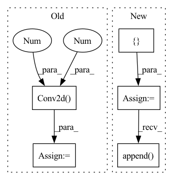

Pattern ID :27876

Before Change
self.use_res_connect = self.stride == 1 and in_channels == out_channels
self.inv_block = nn.Sequential(
nn.Conv2d(in_channels, in_channels * expand_ratio, 1, 1, 0, bias=False),
nn.BatchNorm2d(in_channels * expand_ratio),
nn.PReLU(),
After Change
hidden_dim = int(round(inp * expand_ratio))
self.use_res_connect = self.stride == 1 and inp == oup
layers = []
if expand_ratio != 1:
// pw
layers.append(ConvBNReLU(inp, hidden_dim, kernel_size=1))
layers.extend([
// dw
ConvBNReLU(hidden_dim, hidden_dim, stride=stride, groups=hidden_dim),
// pw-linear
In pattern: SUPERPATTERN
Frequency: 3
Non-data size: 5
Instances
Fragment ID: 82809855
Project Name: opendr-eu/opendr
Commit Name: 18da6a5d3ed5c2a291cb9c600a9fe4e5e17e5671
Time: 2021-01-26
Author: ptosidis@gmail.com
File Name: src/perception/face_recognition/algorithm/backbone/model_mobilenet.py
M Class Name: InvertedResidual
N Class Name: InvertedResidual
M Method Name: __init__(5)
N Method Name: __init__(6)
M Parent Class: nn.Module
N Parent Class: nn.Module
M File Name: src/perception/face_recognition/algorithm/backbone/model_mobilenet.py
N File Name: src/perception/face_recognition/algorithm/backbone/model_mobilenet.py
M Start Line: 111
M End Line: 131
N Start Line: 73
N End Line: 87
'>
Before Change
super().__init__()
hdim = hidden_dim
self.encoder = nn.Sequential(
nn.Conv2d(3, hdim, 4, stride = 2, padding = 1),
nn.ReLU(),
nn.Conv2d(hdim, hdim, 4, stride = 2, padding = 1),
nn.ReLU(),
After Change
assert num_layers >= 1
encoder_layers = []
decoder_layers = []
for i in range(num_layers):
enc_in = 3 if i == 0 else hdim
dec_in = dim if i == 0 else hdim
encoder_layers += [
nn.Conv2d(enc_in, hdim, 4, stride = 2, padding = 1),
nn.ReLU(),
]
dec_in = dim if i == 0 else hdim
decoder_layers += [
nn.ConvTranspose2d(dec_in, hdim, 4, stride = 2, padding = 1),
nn.ReLU(),
]
encoder_layers.append(nn.Conv2d(hdim, num_tokens, 1))
decoder_layers.append(nn.Conv2d(hdim, 3, 1))
self.encoder = nn.Sequential(*encoder_layers)
self.decoder = nn.Sequential(*decoder_layers)
'>
Fragment ID: 82809852
Project Name: lucidrains/dalle-pytorch
Commit Name: 95a980129346b66ce7cbb3f984b698ca21e0965c
Time: 2021-01-06
Author: nauman.mustafa.x@gmail.com
File Name: dalle_pytorch/dalle_pytorch.py
M Class Name: DiscreteVAE
N Class Name: DiscreteVAE
M Method Name: __init__(5)
N Method Name: __init__(4)
M Parent Class: nn.Module
N Parent Class: nn.Module
M File Name: dalle_pytorch/dalle_pytorch.py
N File Name: dalle_pytorch/dalle_pytorch.py
M Start Line: 82
M End Line: 102
N Start Line: 80
N End Line: 107
'>
Before Change
)
// Reconnect a layer of convolution block after upsampling.
self.conv3 = nn.Sequential(
nn.Conv2d(64, 64, (3, 3), (1, 1), (1, 1)),
nn.LeakyReLU(0.2, True)
)
After Change
)
// Upscale block
upsampling = []
for _ in range(2):
upsampling.append(UpsampleBlock(64))
self.upsampling = nn.Sequential(*upsampling)
// Output layer.
self.conv_block3 = nn.Conv2d(64, 3, (9, 9), (1, 1), (4, 4))
'>
Fragment ID: 82809847
Project Name: lornatang/esrgan-pytorch
Commit Name: a9031d71f6f27449fe63ec703344577e35fa87cb
Time: 2022-04-15
Author: liuchangyu1111@gmail.com
File Name: model.py
M Class Name: Generator
N Class Name: Generator
M Method Name: __init__(1)
N Method Name: __init__(1)
M Parent Class: nn.Module
N Parent Class: nn.Module
M File Name: model.py
N File Name: model.py
M Start Line: 149
M End Line: 173
N Start Line: 120
N End Line: 147